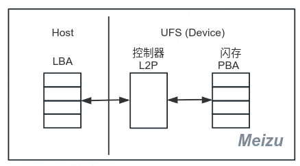
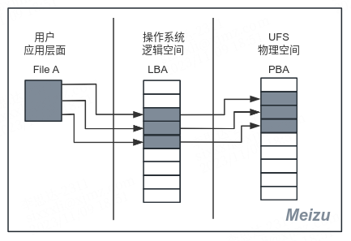
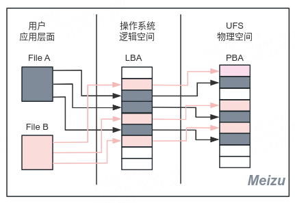
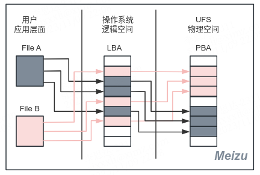
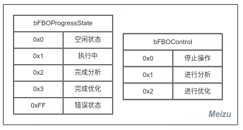
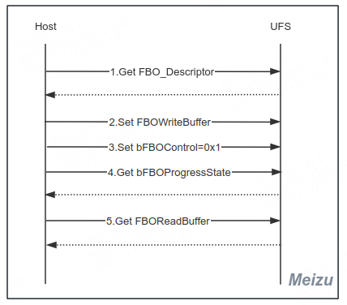
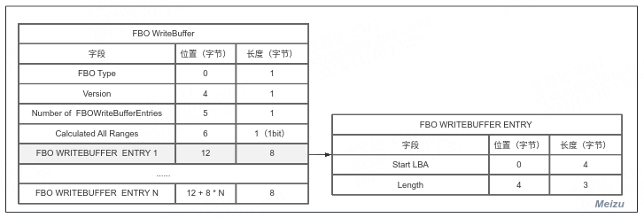
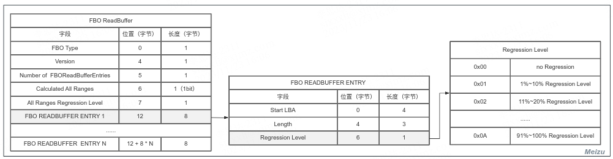
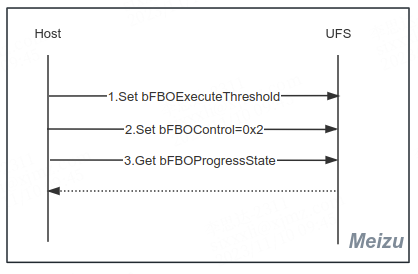
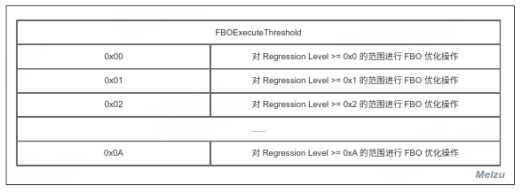

FBO (File Based Optimization) 是 UFS 4.0 标准中新引入的功能，用于优化 UFS 长久使用后由于文件碎片导致的读写性能下降问题。了解 FBO 之前我们先了解下 UFS 的一些基本概念及文件碎片问题。
一、FBO 诞生的原因
UFS (Universal Flash Storage) 通用闪存存储器以良好的性能被广泛用在手机、平板等设备上。UFS 协议由 JEDEC 协会制定，2022年推出了4.0标准。UFS 由闪存和控制器组成，闪存 (Flash) 是存储数据的实际介质，控制器处理主机 (Host) 指令和管理闪存。控制器负责磨损均衡、垃圾回收、掉电恢复、坏块管理等功能外，维护了 L2P (Logical To Physical) 逻辑地址到物理地址的映射表来管理闪存数据的读取写入地址。

闪存将存储空间划分为一个个物理块，使用 PBA (Physical Block Address) 物理块地址来寻址。操作系统在逻辑空间划分了逻辑块，使用LBA (Logical Block Address) 逻辑块地址来寻址。用户访问文件数据时，系统先找到文件对应的 LBA 发送给 UFS，UFS 控制器查阅 L2P 映射表找到对应的 PBA，通过访问物理空间得到要访问的数据。理想情况下在逻辑空间和物理空间用连续的块来存储一个文件，这样用起始地址和长度可以一次性访问更多的空间，如果文件被分散存储则需要更多的查阅映射表和执行 IO 操作。

现实中受多用户同时写入，文件大小变化等因素影响，一个文件在逻辑空间和物理空间被存放在了多个不连续的块中。逻辑空间不连续称为逻辑碎片化，物理空间不连续称为物理碎片化。除了写入的不连续外，UFS 控制器在执行垃圾回收、坏块管理等块搬移操作时也可能把原本连续块的数据搬移到不连续的块上。UFS 使用较长的时间后，闪存上的文件碎片会越来越多，新的文件可能由于没有分配到连续的物理空间在写入时写到了不连续的块上，久而久之，存储卡的读写性能下降，设备越来越卡。

为了优化这个问题，FBO 诞生了！FBO 的功能是消除物理碎片化，也就是将物理空间上不连续的文件整理成物理连续的文件，从而优化由于文件碎片导致的 UFS 读写性能问题。实验证明，使用 FBO 功能的 UFS 测试组在经过长期读写测试，性能未见明显下降，与未使用 FBO 功能的测试组形成鲜明对比，该性能测试对于采用“本地更新”机制的文件系统如 ext4 更明显。

二、FBO 功能的实现
FBO 的实现依赖于主机 (Host) 端驱动和 UFS (Device) 端固件的共同协作，在 UFS 4.0 标准中描述了FBO 实现的流程。主机负责整个流程的控制，通过 bFBOControl 值请求 UFS 执行相应的操作。UFS 负责处理主机指令对闪存进行基于文件的优化，通过 bFBOProgressState 值告知主机 FBO 操作的状态。UFS 端固件一般由 UFS 供应商实现，我们主要关注主机端驱动的实现。FBO 分为两个阶段：分析阶段和优化阶段。

2.1 分析阶段
分析阶段主机获取 UFS 设备 FBO 信息，主机将想要优化的文件的 LBA 告诉 UFS，UFS 查询这个文件在闪存中物理碎片化的程度并告知主机。

- Get FBO_Descriptor：主机端发起请求获取 UFS 设备 FBO Descriptor。UFS 回复信息：FBO 版本、建议的 LBA 范围大小、最大 LBA 范围大小、最小 LBA 范围大小、最大 LBA 范围个数、LBA 范围对齐。
1 | /* FBO Descriptor idn=0xA */ |
- Set FBO_WriteBuffer：主机端发送想要进行整理的文件的信息给 UFS 设备，信息按 FBO WriteBuffer 格式发送。文件的一个逻辑块碎片作为一个 ENTRY 最多存放255个 ENTRY，ENTRY 中包含逻辑块起始地址和长度。
1 | /* cmd[0]=WRITE_BUFFER; cmd[2]=0x1; opf=REQ_OP_DRV_OUT;*/ |

- Set bFBOControl=0x1：主机端请求 UFS 进行分析，UFS 收到后对文件的物理碎片化进行分析
1 | /* opcode=UPIU_QUERY_OPCODE_WRITE_ATTR; FBO Control idn=0x31; *attr_val=0x1 */ |
- Get bFBOProgressState：主机端发起获取 UFS 分析状态的请求，UFS 返回分析状态，主机轮询等待设备分析完成。
1 | /* opcode=UPIU_QUERY_OPCODE_READ_ATTR; FBO Progress State idn=0x33 */ |
- Get FBOReadBuffer：主机收到 UFS 返回的分析完成状态后，读取 FBOReadBuffer 获取 FBO 分析结果。
1 | /* cmd[0]=READ_BUFFER; cmd[2]=0x2; opf=REQ_OP_DRV_IN;*/ |

2.2 优化阶段
优化阶段主机告诉 UFS 设备要执行 FBO 的 Regression Level 范围，UFS 根据等级范围和前面 WriteBuffer 找到的文件进行闪存碎片化整理。

- Set FBOExecuteThreshold：主机发送想要 UFS 设备对那个 Regression Level 范围执行文件优化。
1 | /* opcode=UPIU_QUERY_OPCODE_WRITE_ATTR; FBO Execute Threshold idn=0x32 */ |

- Set bFBOControl=0x2：主机端请求 UFS 执行 FBO，UFS 收到后进行基于文件的优化。
1 | /* opcode=UPIU_QUERY_OPCODE_WRITE_ATTR; FBO Control idn=0x31; *attr_val=0x2 */ |
- Get bFBOProgressState：主机端发起获取 UFS 优化状态的请求，UFS 返回优化状态，主机轮询等待设备优化完成。
1 | /* opcode=UPIU_QUERY_OPCODE_READ_ATTR; FBO Progress State idn=0x33 */ |
NOTE: FBO 操作和 UFS 其他操作是独立的，不会相互影响。
三、参考资料
- JEDEC STANDARD - JESD231JEDEC STANDARD
This is copyright.